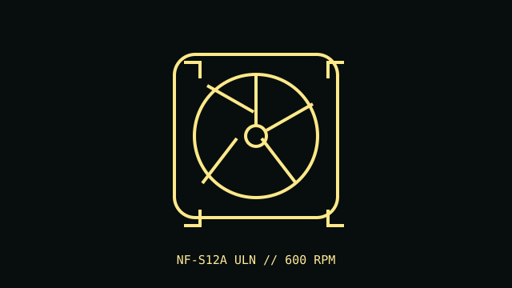

[ IDENTIFIED SKU // NF-S12A ULN ]
Noctua NF-S12A ULN
Ultra-low-noise 120 mm case fan in the 600 RPM ULN variant; distinct from the PWM and FLX models.

Recorded specifications
| Exact part | NF-S12A ULN |
|---|---|
| Frame / thickness | 120 × 120 × 25 mm |
| Speed / airflow / pressure / noise | 600 RPM; 46.4 m³/h maximum airflow; 0.44 mm H₂O maximum static pressure; 6.7 dB(A). |
| Bearing | SSO2 self-stabilizing oil-pressure bearing |
| Electrical / control | 12 V DC; 0.05 A maximum input current; 3-pin fan connector with DC voltage control. Not a PWM model. |
| Case / radiator compatibility | Standard 120 mm case position, 25 mm thickness; best suited to low-restriction case airflow at very low noise. Its low maximum speed and pressure make it a poor choice for restrictive radiators or dense filters. |
Installation notes
Use a DC-controllable fan header and confirm it starts reliably at the chosen minimum voltage. Check case clearance and airflow direction before installation.
Manufacturer sources
- Noctua product page — NF-S12A ULNManufacturer model identification, performance and electrical details.
- Noctua technical data sheet — NF-S12A ULNManufacturer specification sheet for the ULN variant.